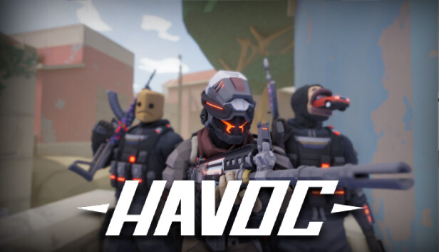

Team true. ESports підписують нового гравця 'Mas1k'
Сьогодні організація true. ESports офіційно оголосила про приєднання до їхнього складу нового талановитого гравця 'Mas1k'. Цей крок став несподіванкою для спільноти, але аналітики вже прогнозують значне посилення команди перед майбутнім турніром BSUL Havoc Summer 2025.
'Mas1k' відомий своєю агресивною грою та неймовірною точністю, що робить його ідеальним доповненням до вже існуючого дуету з капітаном команди '@TheSeuge'.